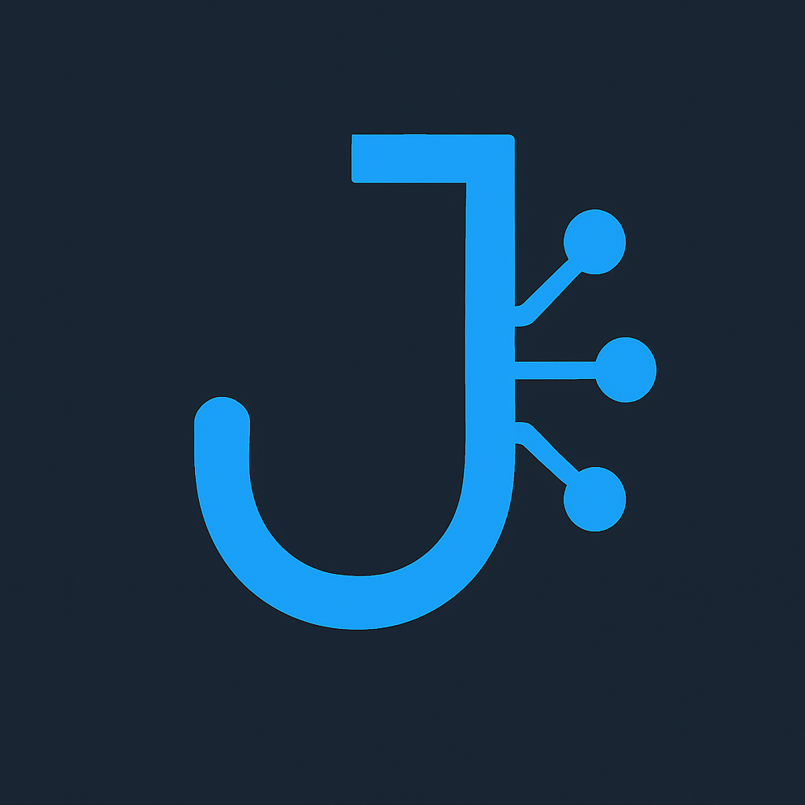

01 • Product Direction
AI-first experience
Build interfaces that communicate confidence: clear next actions, instant feedback, and visible progress across every workflow.
🚀 AI Trends 2026 • Build for Real Impact
This page is a practical blueprint for modern agentic systems: crisp interfaces, safer workflows, faster iteration loops, and clear development direction for high-energy teams.

01 • Product Direction
Build interfaces that communicate confidence: clear next actions, instant feedback, and visible progress across every workflow.
02 • Engineering Direction
Model every action as a typed capability. Add policy checks, structured logs, and rollback paths for safer production automation.
03 • Team Direction
Use weekly wins, monthly demos, and clear KPI dashboards to keep energy high and continuously motivate meaningful delivery.
A clean starter pattern for robust orchestration: explicit capabilities, strict I/O contracts, and policy-aware handlers.
The code sample is shown in its own section so readers can scan the concept first, then inspect implementation details clearly.
const capabilities = [
{
name: 'searchDocs',
description: 'Search company knowledge base',
parameters: { query: 'string' }
},
{
name: 'createTicket',
description: 'Create support ticket',
parameters: { title: 'string', body: 'string' }
}
];
const mcpPrompt = `
You can call: searchDocs, createTicket.
Prefer searchDocs for evidence, createTicket on explicit request.
Return strict JSON payload for selected capability.
`;Each operation is explicit, typed, and discoverable so both developers and models know valid actions.
The prompt sets selection rules and output structure, reducing ambiguity and unsafe behavior.
A strict JSON payload makes downstream execution predictable and easy to validate.
Related docs: README.md, research/README.md, research/trend-map-2026.md
Tier 1 (Now)
Reliability, evals/observability, multimodal production, retrieval quality, and safety engineering.
Tier 2 (Next)
Open-model optimization, coding agents, and enterprise agent platform standards.
Tier 3 (Explore)
Embodied systems, AI-for-science, and global regulatory/economic shifts.
Pick one trend, one workflow, and one measurable outcome. Progress beats perfection.